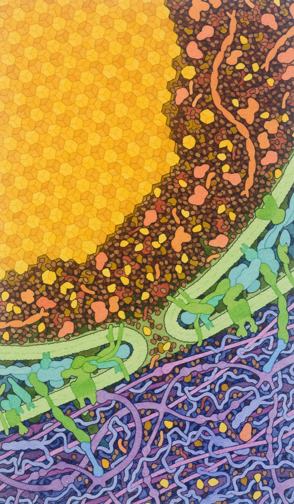
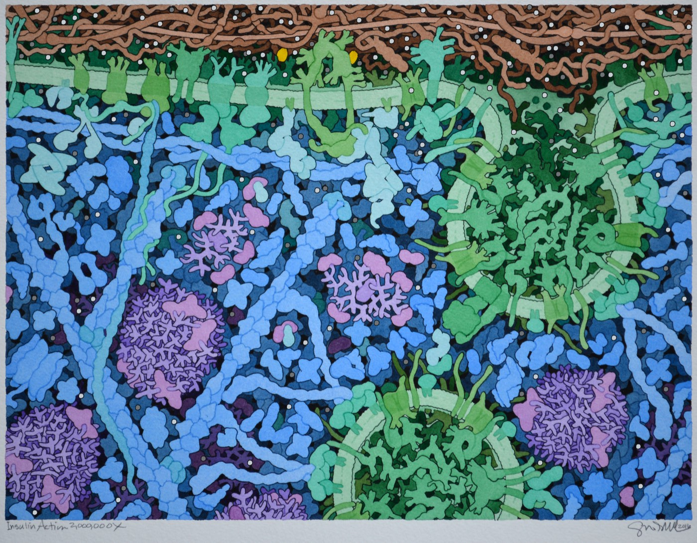

1.6 Homeostasis and Feedback
Chapter 1.5 left a question hanging: what is all that machinery for? This chapter answers it. Every organ, every folded surface, every transport protein you have met exists to hold a small number of internal conditions inside a narrow range, whatever is happening outside.
Two things from 1.3 are about to become the whole chapter. Pepsin works at pH 2 and is destroyed at pH 8; pancreatic enzymes work at pH 8 and are destroyed at pH 2. Every enzyme in your body is like that — a protein with a shape that only holds within a narrow band of temperature and acidity.
That is why conditions inside you have to be controlled. Not for comfort. Because your chemistry stops if they are not.
By the end of this chapter you should be able to
- Explain what homeostasis is and why survival depends on it.
- Identify the stimulus, receptor, control centre, effector and response in any feedback loop.
- Describe negative feedback using body temperature and blood glucose, and explain what breaks in diabetes.
- Describe positive feedback using blood clotting, vomiting, sneezing and childbirth, and explain how each one ends.
- Explain that feedback can stabilise or destabilise a system, and say which kind does which.
Staying the same while everything changes
In 1932 the physiologist Walter Cannon published a book called The Wisdom of the Body, in which he named this idea homeostasis — from Greek words meaning "similar" and "standing still". His insight was that the constancy is not passive. Staying the same in a changing world takes continuous, active work, and a body that stops doing that work does not drift gently; it dies quite quickly.
Here are the main variables your body holds steady, and what happens if it fails.
| Variable | Held near | What goes wrong outside the range |
|---|---|---|
| Core body temperature | 37 °C (about 36.1–37.2) | Below 35 °C, enzymes slow and thinking becomes confused; above about 40 °C, proteins begin to denature |
| Blood glucose | 4–6 mmol/L fasting | Too low: the brain, which cannot store fuel, fails within minutes. Too high: damage to blood vessels, nerves and kidneys over years |
| Blood pH | 7.35–7.45 | A shift of 0.4 either way is usually fatal — every enzyme in the body is affected at once |
| Water and salt balance | Blood roughly 0.9% salt | Cells shrink or swell by osmosis, exactly as in Chapter 1.1 |
| Blood oxygen and carbon dioxide | — | Carbon dioxide build-up lowers blood pH; low oxygen starves respiring cells |
Notice how narrow the blood pH range is: 7.35 to 7.45, a total width of 0.1. Your stomach runs at pH 2 and your duodenum at pH 8 — a difference of a million-fold in hydrogen ion concentration, six inches apart — while the blood between them never moves by a tenth of a unit. Homeostasis is not the absence of extremes. It is extremes being kept exactly where they are wanted.
The thermostat comparison, and where it fails
The thermostat is the standard analogy and it is a good one, so it is worth being clear about what it gets right and where it breaks — exactly the habit Chapter 1.2 asked for.
What it gets right: the structure. A sensor, a target value, a comparison, and two opposing devices that push in opposite directions.
Where it breaks: three places, and each one is interesting.
- A thermostat has one sensor on a wall. You have thermoreceptors in your skin and inside your hypothalamus, so your body responds to a cold room before its core has cooled at all.
- A thermostat has two devices. Your body has at least six responses to temperature — sweating, vasodilation, vasoconstriction, shivering, adjusting metabolic rate, and changing your behaviour by putting on a jumper.
- A thermostat's target is set by you. Your set point is set by the hypothalamus, and it can be deliberately moved. A fever is not a control failure — it is your body raising its own target, which is why you shiver while running a temperature of 39 °C. You feel cold because you are below your new set point.
The five components of a feedback loop
Every control system in your body, without exception, is built from the same five parts. Learning them once means you can take apart any example you are given, including ones you have never seen.
Worked example: too hot
| Component | Getting too hot | Getting too cold |
|---|---|---|
| Stimulus | Core temperature rises above 37 °C | Core temperature falls below 37 °C |
| Receptor | Thermoreceptors in the skin, and receptors inside the hypothalamus itself | |
| Control centre | The hypothalamus | |
| Effector | Sweat glands; smooth muscle in skin arterioles | Skeletal muscle; smooth muscle in skin arterioles; hair erector muscles |
| Response | Sweating (evaporation removes heat); vasodilation brings blood to the surface so heat is lost | Shivering (muscle contraction releases heat); vasoconstriction keeps blood away from the surface |
| Effect on the variable | Temperature falls back towards 37 °C | Temperature rises back towards 37 °C |
Two opposing loops sharing a control centre — one for each direction. That pairing is the standard design, and you will see it again in the next section with insulin and glucagon.
Negative feedback, and what breaks in diabetes
Now the example the learning targets ask for specifically: blood glucose after a meal. It is the best case in the body for seeing a feedback loop, because you have already followed the glucose all the way here from Chapter 1.3.
| Component | Blood glucose too high | Blood glucose too low |
|---|---|---|
| Stimulus | Glucose rises above about 5 mmol/L — you ate | Glucose falls below about 4 mmol/L — you exercised, or have not eaten |
| Receptor | Beta cells in the pancreatic islets | Alpha cells in the pancreatic islets |
| Control centre | The pancreas — which is also part of the digestive system, as Chapter 1.2 warned | |
| Effector | Liver and muscle cells | Liver cells |
| Response | Insulin is released. Cells insert GLUT4 transporters and take glucose in; the liver stores it as glycogen | Glucagon is released. The liver breaks glycogen back down and releases glucose into the blood |
| Effect | Blood glucose falls | Blood glucose rises |
Insulin does not "destroy" or "use up" glucose. It is a message, and its content is roughly: there is plenty, take some in and store it. Cells that receive it move glucose transporters into their membranes and start absorbing. The glucose is not destroyed — it is moved out of the blood and stored as glycogen, mainly in the liver and muscles. That is why the process is reversible, and why glucagon can get it all back a few hours later.


Two diseases, one loop, two different broken parts
Diabetes is a failure of this loop, and there are two quite different versions of it. Locating each one on the five-component diagram explains both the symptoms and the treatment.
| Type 1 | Type 2 | |
|---|---|---|
| Which component fails | The control centre — the immune system destroys the beta cells | The effector — cells stop responding to insulin (insulin resistance) |
| Is insulin present? | Little or none | Often high, at least at first — the pancreas works harder and harder |
| What happens to glucose | Stays high in the blood, because the message either is not sent or is not heard | |
| Treatment follows directly | Supply the missing message — injected insulin | Make the effectors listen again — activity, diet, and medicines that improve sensitivity |
Notice that you can predict the treatment from the diagram without knowing anything else about the disease. That is what a good model buys you, and it is what HS-LS1-3 is really testing.
Why is high blood glucose harmful at all, if the glucose is only sitting in the blood? Two reasons. Glucose is a solute, so a high concentration pulls water out of cells by osmosis — which is why extreme thirst and frequent urination are classic early symptoms. And over years, glucose reacts slowly with proteins in blood vessel walls, nerves and the kidney, which is where the long-term damage comes from. Both are consequences you could have worked out from Chapter 1.1.
Positive feedback: when the body wants to run away
Almost everything your body regulates uses negative feedback, for an obvious reason: staying alive means staying in range. But there is a second kind, and it is reserved for the handful of situations where staying in range is exactly the wrong thing to do.
In positive feedback, the response makes the stimulus stronger. Each turn of the loop makes the next turn bigger, so instead of settling, the process accelerates. That sounds like a fault, and in an engineered system it usually is. In a body it is a tool, used when something has to be finished quickly and completely.
"Negative" does not mean harmful and "positive" does not mean helpful. The words describe the direction of the correction, not its value. Negative feedback opposes the change; positive feedback amplifies it. A negative feedback loop keeping your temperature at 37 °C is extremely helpful, and a positive feedback loop producing a clot in a coronary artery will kill you.
Build all six loops now — two negative, four positive. Classify each one before you build it, then run it and look at the shape of the graph.
Feedback loop builder
Interactive- Do the two negative loops first, then the four positive ones, and compare the graphs. Describe the difference in shape in one sentence without using the words positive or negative.
- For each positive loop, write down what finally stops it. All four have the same kind of answer. What is it?
- Blood clotting and thrombosis are the same mechanism with different outcomes. Which component would you have to change to turn one into the other?
The four cases, summarised
| Loop | What amplifies what | How it ends |
|---|---|---|
| Blood clotting | Platelets stick to exposed collagen and release ADP and thromboxane, which attract more platelets, which release more. In parallel, the enzyme thrombin activates reactions that make yet more thrombin, and thrombin turns soluble fibrinogen into an insoluble fibrin mesh | The hole is sealed, so no collagen is exposed and there is no stimulus left |
| Vomiting | Toxin and stretch stimulate the vomiting centre; each retch irritates and stretches the stomach and oesophagus further, so the next contraction is stronger | The stomach is empty — the loop has removed the irritant that started it |
| Sneezing | An irritant stimulates nerve endings in the nose; the response increases secretion and blood flow, moving the irritant against more endings, so the urge builds until it crosses a threshold and fires | The sneeze expels the irritant |
| Childbirth | The baby's head stretches the cervix; stretch receptors signal the hypothalamus; oxytocin is released; the uterus contracts and pushes the head harder into the cervix, stretching it more | The baby is born and the cervix is no longer stretched |
Look down the last column of that table. Every one of the four positive feedback loops ends the same way: by destroying its own stimulus. The clot seals the hole. The vomiting empties the stomach. The sneeze removes the irritant. The birth removes the stretch.
That answers the question everyone asks — why does it not just keep going? It does keep going. It keeps going right up until the thing causing it no longer exists. And when that safeguard fails, positive feedback becomes lethal: a clot that keeps growing in an undamaged vessel is a thrombosis, and it is the same mechanism that saved your finger.
Stabilising and destabilising
The crosscutting concept behind this chapter is stability and change, and it can now be stated exactly:
- Negative feedback stabilises a system. It resists change and returns the variable to a set point. Systems built from negative feedback loops are hard to shift, which is what you want for temperature, glucose and pH.
- Positive feedback destabilises a system. It amplifies change and drives the variable away from where it was. Systems built from positive feedback loops move fast and do not stop on their own, which is what you want for clotting, vomiting and birth — and dangerous everywhere else.
That distinction is not confined to biology. Ecosystems, economies, epidemics and climate all contain both kinds, and their behaviour is governed by which kind dominates. A room that gets colder the colder it is will keep getting colder. A room with a thermostat will not.
Where this goes next
Every claim in this chapter is a claim about how a body behaves — that breathing rate rises with exercise, that insulin lowers blood glucose, that temperature returns to a set point. And every one of them is a claim somebody had to establish with evidence rather than assert.
So Chapter 1.7 asks the harder question: how would you find out? You will design an investigation into exercise and breathing rate, run it, and discover that the number of people you measured decides whether your result means anything at all. And you will build an energy-balance model that shows what actually happens to body mass when diet and exercise change — which turns out not to be what almost everyone assumes.
Check your understanding
A person with a fever has a body temperature of 39 °C and is shivering under a blanket. Their body is clearly too hot. Explain why the shivering is not evidence that homeostasis has failed.
Feedback loops do not aim at 37 °C because 37 is a magic number; they aim at whatever the hypothalamus currently holds as its set point. During an infection, chemicals released by immune cells act on the hypothalamus and raise the set point, often to 39 °C or so.
Once that happens, a body at 37 °C is below its target. The loop detects that as too cold and does exactly what it always does when the reading is below the set point: shivering to generate heat, and vasoconstriction to keep blood away from the skin. The person genuinely feels cold, because their own control system says they are.
So the shivering is evidence that homeostasis is working perfectly — against a target that has been deliberately moved. The evidence that it works is that when the fever breaks and the set point drops back, the person sweats heavily: now they are above target, and the loop corrects in the other direction.
For each of these, decide whether it is negative or positive feedback and justify it in one sentence: (a) a lake freezing over, so more sunlight is reflected, so it gets colder; (b) sweating on a hot day; (c) breathing faster when blood carbon dioxide rises; (d) a rumour spreading through a school.
(a) Positive. The response (more reflective ice) increases the original change (cooling), so the effect grows rather than being cancelled. This is a real climate feedback, and the fact that it works exactly like blood clotting is the point — the mathematics does not care what the system is made of.
(b) Negative. The response (evaporative cooling) opposes the change (rising temperature) and returns the body towards its set point.
(c) Negative. Rising carbon dioxide is detected by chemoreceptors; the response, faster breathing, removes carbon dioxide and so cancels the stimulus. This is the loop that actually controls your breathing rate — you breathe mainly in response to carbon dioxide, not to a shortage of oxygen.
(d) Positive. Each person who hears it tells others, so the number of people who have heard it increases the rate at which more people hear it. It ends the same way as the loops in this chapter — when there is nobody left who has not heard, the stimulus is gone.
Someone has a condition in which their sweat glands do not work, although everything else about their temperature control is normal. Using the five components, say exactly what is broken, predict what they would experience, and explain why they can still cope with cold weather.
The broken component is an effector. The stimulus still occurs, the thermoreceptors still detect it, the hypothalamus still compares it with the set point and still sends the instruction — but one of the structures that should carry the instruction out cannot do so.
The prediction follows directly. In hot conditions, or during exercise, their core temperature would rise and keep rising, because the main cooling response is unavailable. They would still have vasodilation, which helps a little, and behavioural responses such as seeking shade — but evaporation is by far the most powerful cooling mechanism a human has, and losing it makes overheating a genuine danger. This condition exists and people who have it have to manage heat very carefully.
Cold weather is unaffected because it uses different effectors — skeletal muscle for shivering and arteriole muscle for vasoconstriction — and those are intact. That asymmetry is a good demonstration that a body's control systems are not one machine: each direction has its own effectors, and losing one direction leaves the other untouched.
Quick check
These mark themselves, and point you back to the right section when an answer goes wrong.
Someone with a fever is at 39 °C and shivering under a blanket. What is happening?
Feedback loops do not aim at 37 °C because 37 is a magic number — they aim at whatever the hypothalamus currently holds as the target, and infection moves it. The proof is what happens when the fever breaks: the set point drops, the person is suddenly above target, and they sweat heavily.
An hour ago a feverish person was shivering. Their fever has now broken: they are at 38.5 °C, barely cooler than before, and sweating heavily. Why has the response reversed?
A feedback loop never asks what the temperature is. It asks which side of the target the temperature is on — so moving the target reverses the response without the reading having to change at all. Fever shows this twice: once on the way up, and once on the way down.
A graph of body temperature over time wobbles gently above and below 37 °C and never sits exactly on it. What does that show?
This is the feature people read past. Homeostasis means "held within a range", not "held perfectly still". A small permanent wobble is the unavoidable signature of a loop that detects a change and then opposes it.
A healthy person's blood glucose is measured every ten minutes after a large meal. It climbs above the 4–6 mmol/L fasting range, peaks, and is back inside it two hours later. What does that pattern show?
A correcting system is always a step behind the thing it corrects, so the honest signature of a working loop is a bounded excursion followed by a return — not a flat line. Glucose shows in two hours what temperature shows in a few minutes, and for the same reason.
Someone's sweat glands do not work, but everything else about their temperature control is normal. Which component of the loop has failed?
Locating a fault on the five-component diagram lets you predict the symptoms. Overheating becomes dangerous, because evaporation is by far the most powerful cooling mechanism a human has — but cold weather is unaffected, since shivering and vasoconstriction use entirely different effectors.
Extensive scarring has destroyed the thermoreceptors in someone's skin, though those inside the hypothalamus are untouched. They now start shivering in a cold room only once their core has already cooled. Which component has failed?
This is the first place the thermostat analogy breaks. A thermostat has one sensor; you have two sets, and the skin ones exist to give early warning — they let the body respond to a cold room before the core has cooled at all. Lose them and the loop still works, but it can only start correcting once the damage is already done.
What does insulin actually do to the glucose in your blood?
Insulin's content is roughly: there is plenty, take some in and store it. Cells that receive it insert GLUT4 transporters and start absorbing. Because the glucose is stored rather than destroyed, the whole process is reversible — which is precisely what glucagon does a few hours later.
You have not eaten since the morning and your blood glucose is drifting below 4 mmol/L. The pancreas releases glucagon. What does glucagon do to the glucose in your blood?
Insulin and glucagon are both messages from the same organ, and neither touches a glucose molecule. Their opposite effects come entirely from who hears them and what those cells then do — which is why one hormone can undo the other's work a few hours later.
A patient has high blood glucose and high blood insulin at the same time. Which type of diabetes does that point to, and which component has failed?
The message is being sent and is not being heard, so the fault is at the effector. Notice you can read the treatment straight off the diagram: type 1 needs the missing message supplied by injection, type 2 needs the effectors made sensitive again through activity, diet and medicines.
A second patient has high blood glucose and almost no detectable insulin, and their glucose falls to normal as soon as insulin is injected. Which type of diabetes does that point to, and which component has failed?
Two patients, the same raised glucose, two different broken components — and the treatment follows from which one it is rather than from the symptom they share. That is the whole value of the five-component model: it tells you where to intervene.
A clot forming in an undamaged coronary artery is positive feedback. A loop holding your temperature at 37 °C is negative feedback. What do those words describe?
"Negative" does not mean bad and "positive" does not mean good. They name the direction of the correction, nothing else — and the same clotting mechanism that saved your finger is what makes a thrombosis lethal.
A student argues that childbirth must be negative feedback, because it is a normal healthy process that ends with a baby. What is wrong with that reasoning?
The word names the sign of one arrow in Figure 1.24 — whether the response returns to cancel the stimulus or to add to it. It says nothing about whether the outcome is wanted, and the clearest evidence for that is that contractions get stronger as labour goes on, which is the mechanism working rather than failing.
Positive feedback amplifies itself, so each turn of the loop is bigger than the last. What stops vomiting, sneezing, clotting and childbirth from running forever?
It does keep going — right up until the thing causing it no longer exists. And when that safeguard is absent, the same mechanism turns lethal: a clot growing in an undamaged vessel has no hole to seal, so nothing stops it.
Someone swallows a toxin and begins to vomit. Each retch is more violent than the one before, and then, with nothing having switched on to oppose it, the vomiting stops. Why?
The safeguard is not in the mechanism — it is in the situation. Vomiting stops because the loop consumes the thing feeding it, and so does sneezing, and so does clotting. Put the identical mechanism somewhere with nothing to consume, such as an undamaged artery, and there is nothing to stop it.